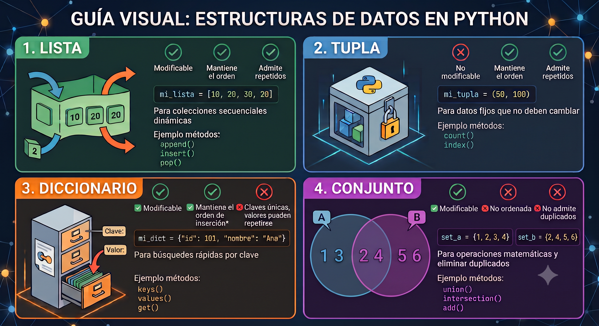

Tema 4: Estructuras de Datos nativas fundamentales de Python
Los temas anteriores han presentado los tipos de datos básicos de Python —enteros, flotantes, cadenas y booleanos— que representan un único valor. En la práctica, la mayoría de los problemas interesantes requieren manipular colecciones de valores: las calificaciones de un grupo de alumnos, los coeficientes de un polinomio, los vértices de un polígono o los elementos de una muestra estadística.
Para representar algunas de estas colecciones, Python proporciona cuatro estructuras de datos nativas: listas, tuplas, diccionarios y conjuntos. Cada una tiene propiedades distintas que la hacen adecuada para situaciones diferentes.

Figura 1: Estructuras de datos nativas de Python
Fundamento Teórico 1: Estructuras de datos
Una estructura de datos es una forma organizada de almacenar y relacionar datos en memoria, diseñada para hacer eficientes ciertas operaciones. No se trata solo de “guardar” datos, sino de elegir cómo guardarlos según qué operaciones necesitas hacer con ellos.
La elección importa porque el rendimiento de las operaciones a realizar depende de la estructura. Buscar un elemento en una lista requiere recorrerla entera en el peor de los casos; en un diccionario o conjunto, la búsqueda es muy eficiente.
La diferencia con lenguajes como C o Java es que en Python no necesitas implementar estas estructuras desde cero ni importar librerías externas: están disponibles con sintaxis directa ([], {}, ()). Esto permite centrarse en cuál elegir en función del problema, no en cómo construirla.
4.1. Listas: secuencias ordenadas y mutables
Las listas son, sin lugar a dudas, la estructura de datos más utilizada y fundamental en Python. Si las variables normales son como “cajas” que guardan un solo dato (un número o un texto), las listas son como archiveros u organizadores donde puedes agrupar colecciones enteras de información bajo un mismo nombre.
Fundamento Teórico 2: Lista
Una lista en Python es una secuencia ordenada y mutable de elementos. Puede contener cualquier combinación de tipos y su longitud puede cambiar durante la ejecución.
Matemáticamente, una lista de \(n\) elementos corresponde a una sucesión finita \((a_0, a_1, \ldots, a_{n-1})\) indexada a partir de \(0\). La mutabilidad —la posibilidad de modificar elementos, añadir o eliminar— es lo que distingue fundamentalmente a las listas de las cadenas y las tuplas (se verán adelante).
Concepto Clave 1: Objetos mutables e inmutables en Python
En Python, mutable significa que el contenido del objeto puede ser modificado después de haber sido creado, sin que este cambie su identidad (su ubicación en la memoria). Imagina que es como una caja abierta: puedes meter o sacar cosas de ella, pero la caja sigue siendo exactamente la misma.
Los objetos inmutables (como los cadenas str, los números int o float) son como cajas selladas. Si necesitas cambiar algo, Python no modifica el objeto original; en su lugar, destruye esa caja y crea una completamente nueva en la memoria con el nuevo valor.
La enorme importancia de las listas en la programación con Python se resume en cuatro puntos clave:
Son el cuchillo suizo del lenguaje (Versatilidad): A diferencia de otros lenguajes más estrictos, una lista en Python es increíblemente flexible. Puedes guardar números, textos, booleanos e incluso otras listas en su interior, ¡todo al mismo tiempo!
Son dinámicas y mutables: Como vimos en la pregunta anterior, las listas pueden crecer o encogerse. Puedes agregar miles de datos nuevos, eliminar los que ya no sirvan o modificarlos sobre la marcha mientras tu programa se ejecuta.
Mantienen el orden: Cada elemento que guardas en una lista tiene una posición numérica exacta (un índice, empezando a contar desde el cero). Esto es crucial cuando necesitas procesar datos en un orden específico o buscar algo en una posición concreta.
Son la puerta de entrada a datos complejos: Entender cómo iterar (recorrer) y manipular listas es el paso previo y obligatorio antes de saltar a herramientas más avanzadas de la industria, como los arrays matemáticos de NumPy o las bases de datos en Pandas.
4.1.1 Creación e indexación
Una lista se crea encerrando sus elementos entre corchetes [], separados por comas. La función list() convierte cualquier iterable en lista:
Cada elemento tiene un índice entero que indica su posición y permite acceder a él. Python admite índices positivos (desde el inicio) y negativos (desde el final):
Concepto Clave 2: Indexación positiva y negativa
Dada una lista a con n elementos, el índice positivo i (con \(0 \leq i < n\)) accede al elemento a[i], y el índice negativo -k (con \(1 \leq k \leq n\)) accede al elemento a[n-k]:
Posición
1.ª
2.ª
…
penúltima
última
Índice positivo
a[0]
a[1]
…
a[n-2]
a[n-1]
Índice negativo
a[-n]
a[-n+1]
…
a[-2]
a[-1]
Error Frecuente 1: IndexError: índice fuera de rango
Acceder a un índice que no existe lanza un IndexError:
notas = [8.5, 7.0, 9.5]print(notas[5]) # IndexError: list index out of range
Usa a[-1] para el último elemento sin necesidad de conocer len(a). Para iterar sobre todos los elementos, usa un bucle for directamente sobre la lista en lugar de iterar sobre índices: for nota in notas:.
4.1.2 Sublistas (slicing)
El operador de slicing extrae una sublista sin modificar la original. La sintaxis lista[inicio:fin:paso] funciona igual que en rangos (range()): inicio incluido, fin excluido, paso opcional:
El resultado es siempre una nueva lista (copia superficial): modificar la sublista no altera la original.
Concepto Clave 3: Copia superficial vs. copia profunda
Una copia superficial (shallow copy en inglés) de una lista es una nueva lista que contiene referencias a los mismos objetos que la original. Si alguno de los elementos en la copia son mutables, modificarlos en la copia afectará a la original.
Una copia profunda (deep copy en inglés) crea una nueva lista y también copia los objetos mutables contenidos en ella, de modo que la copia y la original son completamente independientes.
4.1.3 Mutabilidad: modificar listas
Las listas son mutables: sus elementos pueden cambiarse directamente mediante asignación, y su tamaño puede modificarse:
4.1.4 Métodos y operaciones principales
Las listas (objetos del tipo list) disponen de un conjunto de métodos que cubren las operaciones más comunes: añadir y eliminar elementos, buscar, ordenar e invertir.
Una distinción importante es si el método modifica la lista en su lugar o devuelve un valor nuevo sin tocarla. Confundir ambos casos es un error frecuente: a.sort() ordena a y devuelve None, mientras que sorted(a) deja a intacta y devuelve una lista nueva ordenada.
Además de los métodos propios, las listas admiten operaciones con operadores (+, *, in) y funciones built-in del lenguaje (len(), sum(), min(), max(), sorted(), reversed()), que funcionan sobre cualquier secuencia, no solo listas.
Concepto Clave 4: Métodos de las listas
Método
Descripción
Modifica la lista
a.append(x)
Añade x al final
Sí
a.extend(iterable)
Añade todos los elementos del iterable al final
Sí
a.insert(i, x)
Inserta x en la posición i
Sí
a.remove(x)
Elimina la primera aparición de x (ValueError si no existe)
Sí
a.pop(i=-1)
Elimina y devuelve el elemento en posición i (por defecto el último)
Sí
a.sort()
Ordena en su lugar (modifica a)
Sí
a.reverse()
Invierte en su lugar
Sí
a.index(x)
Devuelve el índice de la primera aparición de x
No
a.count(x)
Cuenta las apariciones de x
No
a.copy()
Devuelve una copia superficial
No
a.clear()
Elimina todos los elementos
Sí
La función built-in sorted(a) devuelve una nueva lista ordenada sin modificar a. La función built-in reversed(a) devuelve un iterador inverso.
El operador + concatena dos listas (produciendo una nueva), * repite, e in comprueba pertenencia (coste \(O(n)\)):
Ejemplo 1: Mutable vs inmutable con list.copy()
Para visualizar cómo se comportan los diferentes tipos de datos bajo una copia superficial usando .copy(), vamos a crear una lista que contenga tanto un elemento inmutable (un entero) como un elemento mutable (una lista).
Se observa que el elemento inmutable (el entero 100) no se ve afectado en la lista original por la modificación en la copia. El elemento mutable (la lista [1, 2]) sí se ve alterado, reflejando el comportamiento de las copias superficiales.
4.1.5 Listas y matemáticas
Las listas son la representación natural de los objetos matemáticos más básicos: un vector de \(\mathbb{R}^n\) es una sucesión finita de números reales, los coeficientes de un polinomio forman una secuencia ordenada, y una matriz no es más que una sucesión de filas. La correspondencia entre el concepto matemático y la lista de Python es directa e inmediata.
En esta sección se ilustra esa correspondencia con ejemplos concretos: cómo representar vectores y calcular sus operaciones elementales, cómo evaluar un polinomio de forma eficiente usando el algoritmo de Horner, y cómo una lista de listas reproduce la estructura de una matriz. El objetivo no es reemplazar las herramientas del ecosistema científico —NumPy lo hará mucho mejor en el Tema 8— sino entender qué hay debajo: antes de usar np.dot() conviene saber implementar un producto escalar a mano.
Ejemplo 2: Vectores y operaciones básicas
Una lista de flotantes representa naturalmente un vector de \(\mathbb{R}^n\). La suma de vectores y el producto escalar se implementan con comprensiones (sección 4.5) o con la función sum():
Ejemplo 3: Evaluación de un polinomio — algoritmo de Horner
Los coeficientes de un polinomio \(p(x) = a_0 + a_1 x + \cdots + a_n x^n\) se almacenan en una lista [a0, a1, ..., an] (del grado menor al mayor). El algoritmo de Horner evalúa el polinomio en \(O(n)\) operaciones sin calcular potencias: \[
\begin{aligned}
p(x) &= a_0 + a_1 x + a_2 x^2 + \cdots + a_n x^n \\
&= a_0 + x\bigl(a_1 + x\bigl(a_2 + x(\cdots + x \cdot a_n)\bigr)\bigr)
\end{aligned}
\]
Vamos a asumir que los coeficientes se almacenan en una lista coefs de forma que coefs[i] es el coeficiente de \(x^i\).
Ejemplo 4: Listas de listas: matrices y acceso por doble índice
Una lista puede contener otras listas como elementos. El acceso usa dos índices consecutivos: matriz[fila][columna].
La lectura es de izquierda a derecha: matriz[i] devuelve la lista de la “fila” i, y sobre ese resultado se aplica [j] para obtener el elemento de la “columna” j. Esta representación corresponde directamente a una matriz \(n \times n\) donde \(a_{ij}\) se accede como matriz[i][j].
4.2. Tuplas: secuencias ordenadas e inmutables
Las tuplas son, en apariencia, listas que no se pueden modificar. Pero esa definición por negación no hace justicia a su papel: la inmutabilidad no es una restricción arbitraria, sino una garantía de diseño que comunica una intención. Cuando una función devuelve una tupla (cociente, resto) o cuando se almacenan las coordenadas de un punto como (x, y), el programador está diciendo explícitamente que esos valores forman una unidad fija que no debe cambiar.
Esta distinción semántica tiene consecuencias prácticas directas. Al ser inmutables, las tuplas pueden usarse como claves de diccionario o como elementos de un conjunto, algo imposible con listas. Son también ligeramente más eficientes en memoria y acceso, aunque esa diferencia rara vez es determinante en la práctica.
La regla informal para elegir entre lista y tupla es:
usa una lista cuando la colección puede crecer, encogerse o cambiar;
usa una tupla cuando los elementos forman una estructura fija con un significado conjunto:
las coordenadas de un punto,
los componentes de un vector de dimensión conocida,
los valores de retorno múltiple de una función.
Fundamento Teórico 3: Tupla
Una tupla en Python es una secuencia ordenada e inmutable de elementos. Una vez creada, no puede modificarse: no se pueden añadir, eliminar ni cambiar sus elementos.
La inmutabilidad hace que las tuplas puedan usarse como claves de diccionarios y como elementos de conjuntos, algo que las listas no permiten. Se usan cuando se quiere garantizar que una colección de valores permanece constante (coordenadas de un punto, colores RGB, un par \((q, r)\) de cociente y resto…).
4.2.1 Creación e inmutabilidad
Las tuplas se crean con paréntesis () o simplemente separando los elementos por comas. Para una tupla de un solo elemento, la coma final es obligatoria:
Concepto Clave 5: Tupla de un elemento: la coma es obligatoria
Paréntesis sin coma no crean una tupla; simplemente agrupan una expresión. Los paréntesis son opcionales para definir tuplas, pero la coma final es obligatoria para una tupla de un solo elemento:
La indexación y el slicing funcionan igual que en las listas, pero cualquier intento de modificar una tupla lanza TypeError:
punto = (3.0, 4.0)print(punto[0]) # 3.0punto[0] =5.0# TypeError: 'tuple' object does not support item assignment
4.2.2 Desempaquetado
El desempaquetado (unpacking) asigna los elementos de una tupla (o de cualquier iterable) a varias variables en una sola instrucción:
4.2.3 Retorno múltiple
El retorno múltiple en Python es la capacidad que tiene una función para devolver más de un valor al mismo tiempo en una sola instrucción return. En lenguajes más antiguos o estrictos, una función solo puede devolver un único resultado. Si necesitabas devolver varios datos, tenías que crear un arreglo, un objeto o usar punteros. En Python, es tan natural como separar las variables por comas (tupla).
Ejemplo 5: Retorno múltiple con tuplas
Una función puede devolver varios valores empaquetándolos en una tupla. El llamador los desempaqueta directamente:
4.2.4 Métodos y operaciones principales
A diferencia de las listas, las tuplas disponen de tan solo dos métodos: count() e index(). Esta ausencia no es un olvido del lenguaje sino una consecuencia directa de la inmutabilidad: no tiene sentido ofrecer métodos para añadir, eliminar u ordenar elementos que no pueden cambiar.
Lo que sí comparten con las listas es la capacidad de ser iteradas con un bucle for, de ser consultadas con in, y de ser medidas con len(). En la práctica, una tupla se recorre exactamente igual que una lista; la diferencia es que no se puede modificar nada durante el recorrido.
4.2.5 Tuplas y matemáticas
Las tuplas son la representación natural de los objetos matemáticos que no pueden modificarse. Por ejemplo, un punto de \(\mathbb{R}^2\) es un par ordenado de coordenadas, una fracción irreducible es un par de enteros.
Combinando tuplas y listas, se pueden representar estructuras más complejas como polígonos. Los vertices del polígono se pueden almacenar como una lista de tuplas.
Ejemplo 6: Polígonos: lista de vértices como tuplas
Un polígono de \(n\) vértices se representa como una lista de tuplas: la lista refleja que el número de vértices puede variar (o construirse incrementalmente), y cada tupla refleja que las coordenadas de un vértice son fijas e inmutables.
La fórmula del área es la del lazador (shoelace formula): \[
A = \frac{1}{2}\left|\sum_{i=0}^{n-1}(x_i\, y_{i+1} - x_{i+1}\, y_i)\right|
\] donde los índices son módulo \(n\) (el vértice \(n\) es el vértice \(0\)). Es una fórmula elegante que aparece en geometría computacional y que se implementa directamente con el bucle anterior.
4.3. Diccionarios: mapeos clave-valor
Fundamento Teórico 4: Diccionario
Un diccionario en Python es una colección mutable de pares clave–valor donde las claves son únicas. Desde Python 3.7, el orden de inserción se preserva.
Matemáticamente, un diccionario implementa una función finita\(f: K \to V\) donde \(K\) es el conjunto de claves y \(V\) el de valores. Las claves deben ser hashables (inmutables: enteros, flotantes, cadenas, tuplas…).
La búsqueda, inserción y eliminación tienen coste promedio \(O(1)\) gracias a la tabla hash interna, lo que los hace extraordinariamente eficientes frente a las listas (\(O(n)\) para búsqueda).
4.3.1 Creación y acceso
Los diccionarios se crean con llaves {} usando la sintaxis clave: valor, o con dict():
El acceso a un valor se realiza por clave. El método .get() es más seguro porque devuelve None (o un valor por defecto) si la clave no existe, sin lanzar error:
Error Frecuente 2: KeyError: clave inexistente
Acceder con [] a una clave que no existe lanza KeyError:
d = {"a": 1}print(d["b"]) # KeyError: 'b'
La alternativa segura es d.get(clave) o comprobar antes con clave in d.
La asignación añade o actualiza pares, y del elimina uno:
Dado que las tuplas son hashables, pueden usarse como claves de diccionario: esto permite indexar tablas por pares o triples de valores, algo imposible con listas. El siguiente ejemplo muestra cómo almacenar en un diccionario distancias al origen de coordenadas de un punto $ (x, y) ^2 $. El diccionario tiene como claves tuplas (x, y) que representan las coordenadas del punto, el valor asociado es la distancia euclidiana al origen:
4.3.2 Métodos principales e iteración
Los diccionarios exponen tres vistas que permiten acceder por separado a claves, valores o pares: d.keys(), d.values() y d.items(). Son objetos dinámicos —reflejan el estado actual del diccionario en todo momento— y son la base de la iteración idiomática en Python.
La forma más común de recorrer un diccionario es con .items(), que en cada iteración desempaqueta directamente el par (clave, valor) en dos variables. Iterar sobre el diccionario directamente (for k in d) equivale a iterar sobre sus claves, igual que for k in d.keys().
Además de las vistas, los diccionarios ofrecen métodos para acceso seguro (.get()), inserción condicional (.setdefault()), fusión (.update()) y eliminación con retorno del valor (.pop()).
Concepto Clave 6: Métodos principales de los diccionarios
Método
Descripción
d.keys()
Vista de todas las claves
d.values()
Vista de todos los valores
d.items()
Vista de pares (clave, valor)
d.get(k, v)
Devuelve d[k] o v si k no existe (por defecto None)
d.update(otro)
Añade o sobreescribe con los pares de otro
d.pop(k)
Elimina y devuelve d[k]
d.setdefault(k, v)
Si k no existe, lo inserta con valor v y lo devuelve
La forma idiomática de iterar sobre un diccionario es con .items(), que devuelve pares (clave, valor):
El operador in comprueba la presencia de una clave en tiempo \(O(1)\):
4.3.3 Diccionarios y matemáticas
Ejemplo 7: Diccionario para función discreta finita
Un diccionario es la estructura natural para una función discreta finita: las claves son los elementos del dominio y los valores las imágenes. El acceso a cualquier valor es \(O(1)\) independientemente del tamaño de la tabla.
Ejemplo 8: Diccionario para polinomios dispersos
Un diccionario también permite representar polinomios dispersos (con muchos coeficientes nulos) de forma compacta: las claves son los grados y los valores los coeficientes no nulos.
Ejemplo 9: Diccionario para matrices dispersas
Una matriz dispersa tiene la mayoría de sus entradas a cero. Almacenarla como lista de listas desperdiciaría memoria; un diccionario con claves (fila, columna) solo guarda las entradas no nulas:
La clave (i, j) es una tupla —hashable e inmutable— lo que ilustra directamente por qué las tuplas pueden ser claves de diccionario y las listas no. En matrices con millones de entradas pero pocas no nulas (matrices de rigidez en elementos finitos, grafos de la web), este enfoque reduce dramáticamente el uso de memoria.
Fundamento Teórico 5: Teoría de grafos
La teoría de grafos es una rama de las matemáticas y de las ciencias de la computación que estudia las relaciones entre objetos a través de una estructura matemática formal llamada grafo. Un grafo se define como un conjunto de objetos llamados vértices (o nodos) unidos por enlaces llamados aristas (o arcos), que permiten representar relaciones binarias entre elementos de un conjunto.
Un grafo\(G = (V, E)\) consiste entonces en un conjunto de vértices (nodos) \(V\) y un conjunto de aristas (arcos) \(E \subseteq \{\{u, v\} \mid u, v \in V\}\) que representan conexiones entre pares de vértices. Cuando las aristas tienen dirección se habla de grafo dirigido (dígrafo); cuando tienen un peso numérico asociado, de grafo ponderado.
Las dos representaciones clásicas de un grafo \(G = (V, E)\) con \(n = |V|\) vértices y \(m = |E|\) aristas son:
Lista de adyacencia — para cada vértice \(u\) se almacena el conjunto de sus vecinos. Es eficiente cuando el grafo es disperso (pocas aristas respecto al máximo posible \(n^2\)).
Matriz de adyacencia — una matriz \(A\) de \(n \times n\) donde \(A[i][j] = 1\) si existe la arista \(\{i, j\}\) y \(0\) en caso contrario. Es ineficiente para grafos dispersos pero conveniente para grafos densos y para ciertos cálculos matriciales: por ejemplo, \(A^k[i][j]\) cuenta el número de caminos de longitud exactamente \(k\) entre \(i\) y \(j\).
En la práctica, la lista de adyacencia es la representación por defecto; la matriz de adyacencia se reserva para algoritmos que explotan explícitamente la estructura algebraica de los grafos.
Conceptos Clave
Adyacencia: Dos vértices son adyacentes (vecinos) si existe una arista que los conecta directamente.
Grado (Degree): Es el número de aristas que inciden en un vértice. En digrafos, se distingue entre grado de entrada (in-degree) y grado de salida (out-degree).
Camino (Path): Una secuencia de vértices donde cada vértice adyacente está conectado por una arista, sin repetir vértices.
Ciclo: Un camino que empieza y termina en el mismo vértice.
Grafo Conexo: Un grafo donde existe al menos un camino entre cualquier par de vértices.
Ejemplo 10: Diccionarios y grafos
La forma más “Pythonica” y eficiente de representar grafos es Python en la mayoría de los casos (especialmente si el grafo tiene muchos nodos pero pocas conexiones) es mediante diccionarios. Para grafos y digrados se emplea un diccionario donde las claves son los nodos y los valores son la lista de adyacencia en forma de conjunto (set). Para un grafo ponderado la lista de adyacencia se representa mediante un diccionario que contiene pares {nodo: peso}.
# grafo no dirigido dict[int, set[int]]g = {1: {2, 3}, 2: {1, 4},3: {1}, 4: {2}}# digrafo dict[int, set[int]] pero sin simetría, arista 1→2 si pero 2→1 no d = {1: {2, 3}, 2: {4}, 3: {4}, 4: {3}} # grafo ponderado dict[int, dict[int, float]] w = {1: {2: 1.5, 3: 2.0}, 2: {1: 1.5, 4: 3.5}, 3: {1: 2.0}, 4: {2: 3.5}}
En todos los casos la comprobación de adyacencia es eficiente gracias al uso de set o dict para los vecinos, a diferencia de una lista de adyacencia donde habría que recorrerla entera.
4.4. Conjuntos: colecciones no ordenadas de elementos únicos
Los conjuntos (set) son la estructura de datos de Python que traslada directamente el concepto matemático de conjunto: una colección no ordenada de elementos únicos. A diferencia de las listas, no existe noción de posición ni se admiten duplicados; a diferencia de los diccionarios, solo se almacenan valores, no pares clave-valor. Su rasgo más característico es que soportan de forma nativa las operaciones clásicas del álgebra de conjuntos —unión, intersección, diferencia y diferencia simétrica— con una sintaxis concisa y eficiente. En la práctica, los conjuntos son la herramienta natural cuando lo que importa es pertenencia y unicidad, no orden ni multiplicidad: eliminar duplicados de una colección, comprobar si dos grupos comparten elementos, o calcular qué hay en uno pero no en el otro.
Fundamento Teórico 6: Conjunto
Un conjunto (tipo set) en Python es una colección no ordenada de elementos únicos y hashables. Implementa directamente el concepto matemático de conjunto de la teoría de Cantor.
Sus propiedades fundamentales son:
Sin duplicados: añadir un elemento ya presente no tiene efecto.
Sin orden: no hay indexación por posición.
Pertenencia en \(O(1)\): x in s es operación de tiempo constante, frente al \(O(n)\) de las listas.
Existe también frozenset, la versión inmutable de set (usable como clave de diccionario).
4.4.1 Creación
Los conjuntos se crean con llaves {} o con set(). Atención: {} vacío crea un diccionario, no un conjunto:
Error Frecuente 3: {} crea un diccionario vacío, no un conjunto
4.4.2 Operaciones del álgebra de conjuntos
Las operaciones del álgebra de conjuntos son precisamente el punto donde set deja de ser una mera colección y se convierte en una herramienta matemática. Python implementa las cuatro operaciones clásicas —unión, intersección, diferencia y diferencia simétrica— tanto mediante operadores simbólicos (|, &, -, ^) como mediante métodos (.union(), .intersection(), .difference(), .symmetric_difference()). La distinción entre ambas formas es sutil pero relevante: los operadores exigen que ambos operandos sean conjuntos, mientras que los métodos aceptan cualquier iterable como argumento. Todas estas operaciones devuelven un nuevo conjunto sin modificar los originales.
Concepto Clave 7: Operaciones de conjuntos en Python
Python implementa las operaciones clásicas de la teoría de conjuntos con operadores simbólicos:
Operación matemática
Operador Python
Método equivalente
Unión \(A \cup B\)
A \| B
A.union(B)
Intersección \(A \cap B\)
A & B
A.intersection(B)
Diferencia \(A \setminus B\)
A - B
A.difference(B)
Diferencia simétrica \(A \triangle B\)
A ^ B
A.symmetric_difference(B)
Subconjunto \(A \subseteq B\)
A <= B
A.issubset(B)
Subconjunto propio \(A \subsetneq B\)
A < B
—
Superconjunto \(A \supseteq B\)
A >= B
A.issuperset(B)
Disjuntos \(A \cap B = \emptyset\)
—
A.isdisjoint(B)
Los métodos add(), remove() y discard() modifican el conjunto. La diferencia entre los dos últimos es que discard() no lanza error si el elemento no existe:
Una propiedad fundamental es la eficiencia del test de pertenencia. Para comprobar si un elemento está en una colección de \(n\) elementos, una lista requiere \(O(n)\) comparaciones en el peor caso, mientras que un conjunto lo hace en \(O(1)\) amortizado:
4.4.3 Conjuntos y matemáticas
Anteriormente se ha visto que los conjuntos son la estructura natural para traducir directamente a Python el concepto matemático de conjunto. Esto permite implementar de forma inmediata algoritmos clásicos de teoría de números, como el cálculo del máximo común divisor (MCD) y del mínimo común múltiplo (MCM) mediante la intersección y la unión de conjuntos de divisores.
Ejemplo 11: Divisores y MCD con conjuntos
El conjunto de divisores de un entero es un objeto matemático natural que se representa directamente con un set. Las operaciones de conjuntos dan el MCD y el MCM de forma inmediata:
En la función divisores(), el bucle solo itera hasta \(\sqrt{n}\), añadiendo a la vez el divisor y su complemento. Esto reduce el número de iteraciones a \(O(\sqrt{n})\) frente a \(O(n)\) de un enfoque ingenuo. Esto se basa en que los divisores de un número aparecen en pares: si \(d\) divide a \(n\), entonces también lo hace \(n/d\) (Si \(d \mid n\), existe un entero \(k\) tal que \(n = d \cdot k\). Entonces \(k = n/d\), y como \(n = k \cdot d\), se tiene que \(k \mid n\)).
Otro ejemplo clásico es la criba de Eratóstenes para generar todos los números primos hasta un límite \(n\). Lo veremos en el ejemplo 13 en la próxima sección, donde se implementa con conjuntos y operaciones de conjuntos.
4.5. Comprensión de listas, diccionarios y conjuntos
Una de las características más expresivas de Python es la comprensión (comprehension en inglés): una sintaxis compacta para construir listas, diccionarios y conjuntos a partir de cualquier iterable, con un filtro opcional. Su importancia va más allá de la brevedad: una comprensión bien escrita comunica la intención directamente, sin el ruido de variables auxiliares ni llamadas a .append().
La correspondencia con la notación matemática de conjuntos es inmediata. La expresión \(\{x^2 \mid x \in \mathbb{Z},\ 1 \leq x \leq 5\}\) se escribe en Python como {x**2 for x in range(1, 6)}. Es la traducción directa a Python de la notación de comprensión de conjuntos de la teoría de conjuntos: \[
\bigl\{\ f(x)\ \bigm|\ x \in A,\; P(x)\ \bigr\}
\quad\longleftrightarrow\quad
\texttt{[f(x)\ for\ x\ in\ A\ if\ P(x)]}
\] Esta alineación entre matemática y código es especialmente valiosa: permite expresar transformaciones y filtros sobre colecciones de datos de forma que el código refleje fielmente el enunciado del problema.
Las comprensiones no son un atajo estilístico opcional: aparecen de forma ubicua en código Python real, en bibliotecas científicas y en ejemplos de la documentación oficial. Dominarlas es, en la práctica, una condición necesaria para leer y escribir Python con fluidez.
Fundamento Teórico 7: Comprensión de listas
Una comprensión de listas construye una nueva lista evaluando una expresión para cada elemento de un iterable, con un filtro opcional:
[expresión for variable in iterable] # sin filtro[expresión for variable in iterable if condición] # con filtro
Es equivalente a un bucle for con append, pero más concisa y generalmente más eficiente:
resultado = []for variable in iterable:if condición: resultado.append(expresión)
La comprensión es una expresión (produce un valor), mientras que el bucle equivalente es una secuencia de instrucciones. Esto permite usarla directamente en argumentos de funciones, asignaciones y otras expresiones (Peters 2000).
4.5.1 Comprensión de listas
Las comprensiones admiten anidamiento para generar matrices u otras estructuras bidimensionales:
No usar[[0] * n] * n para inicializar una matriz de ceros: crea \(n\) referencias a la misma fila, de modo que modificar un elemento afecta a todas las filas. La forma correcta es [[0] * n for _ in range(n)], que crea \(n\) listas independientes.
4.5.2 Comprensión de diccionarios y conjuntos
La misma sintaxis se extiende a diccionarios (con {clave: valor for …}) y a conjuntos (con {expr for …}):
Error Frecuente 4: La comprensión de tupla no existe
(x**2 for x in range(5)) no es una tupla: es un generador. Si se pasa directamente a una función que espera una secuencia, puede producir resultados inesperados o consumirse una sola vez:
Para obtener una tupla, envuelve la expresión en tuple():
4.5.3 Comprensiones y notación matemática
Ejemplo 12: Comprensiones como notación de conjuntos
Las comprensiones de Python son la traducción directa de la notación de comprensión matemática. La tabla siguiente ilustra la correspondencia:
Notación matemática
Python
\(\{2k \mid k \in \mathbb{N},\; 0 \leq k \leq 10\}\)
{2*k for k in range(11)}
\(\{n^2 \mid n \in \{1,\ldots,20\},\; n \text{ impar}\}\)
{n**2 for n in range(1, 21) if n % 2 != 0}
\(\displaystyle\sum_{k=1}^{100} k^2\)
sum(k**2 for k in range(1, 101))
\(\displaystyle\prod_{k=1}^{n} k = n!\)
from math import prod; prod(range(1, n+1))
Ejemplo 13: Criba de Eratóstenes con comprensión de conjuntos y operadores de conjuntos
La criba de Eratóstenes es un algoritmo clásico para obtener todos los primos hasta \(n\): se parte del conjunto \(\{2, 3, \ldots, n\}\) y se eliminan sucesivamente los múltiplos de cada primo encontrado. Después de eliminar todos los múltiplos de un primo \(p\), el próximo primo es el elemento del conjunto que sigue a \(p\). La eliminación de los múltiplos de \(p\) se puede expresar como una diferencia de conjuntos.
La operación -= (diferencia de conjuntos) elimina de golpe todos los múltiplos de p, sin necesidad de recorrer la lista marcando posiciones como en la versión clásica con arrays. Solo hay que cribar hasta \(\sqrt{n}\) porque cualquier número compuesto \(m \leq n\) tiene al menos un factor primo \(p \leq \sqrt{m} \leq \sqrt{n}\).
Ejemplo 14: Números perfectos
Un entero \(n \geq 1\) es perfecto si es igual a la suma de sus divisores propios (divisores positivos distintos de \(n\)). Los cuatro primeros son \(6, 28, 496\) y \(8128\); se desconoce si existen infinitos.
Ejemplo 15: Primos gemelos
Dos primos \(p\) y \(p+2\) forman un par de primos gemelos. La conjetura de los primos gemelos afirma que existen infinitos pares de este tipo, aunque permanece sin demostración.
Ejemplo 16: Función de Euler \(\varphi(n)\)
La función de Euler\(\varphi(n)\) cuenta cuántos enteros en \(\{1, \ldots, n\}\) son coprimos con \(n\), es decir, cuántos satisfacen \(\gcd(k, n) = 1\). Es fundamental en teoría de números y en criptografía (RSA).
4.5.4 Expresiones generadoras
Una expresión generadora tiene la misma sintaxis que una comprensión de listas pero con paréntesis en lugar de corchetes. La diferencia no es meramente tipográfica: mientras que la comprensión construye la lista completa en memoria de inmediato, la expresión generadora produce los valores uno a uno y solo cuando se le solicita el siguiente, igual que una función generadora (sección 3.1.4).
Su uso más frecuente es como argumento directo de sum(), max(), min(), any() y all(), sin necesitar una lista intermedia. Cuando la expresión generadora es el único argumento de una función, los paréntesis del argumento y los del generador se fusionan en uno solo:
Como se vio en @cau-gen-tupla, un generador se agota después de consumirse. Si se necesita recorrer los valores más de una vez, usa una comprensión de lista en su lugar.
Ejemplo 17: Expresiones generadoras y sumas matemáticas
La expresión sum(f(k) for k in range(a, b+1)) es la traducción directa de \(\displaystyle\sum_{k=a}^{b} f(k)\), sin construir la lista de sumandos: